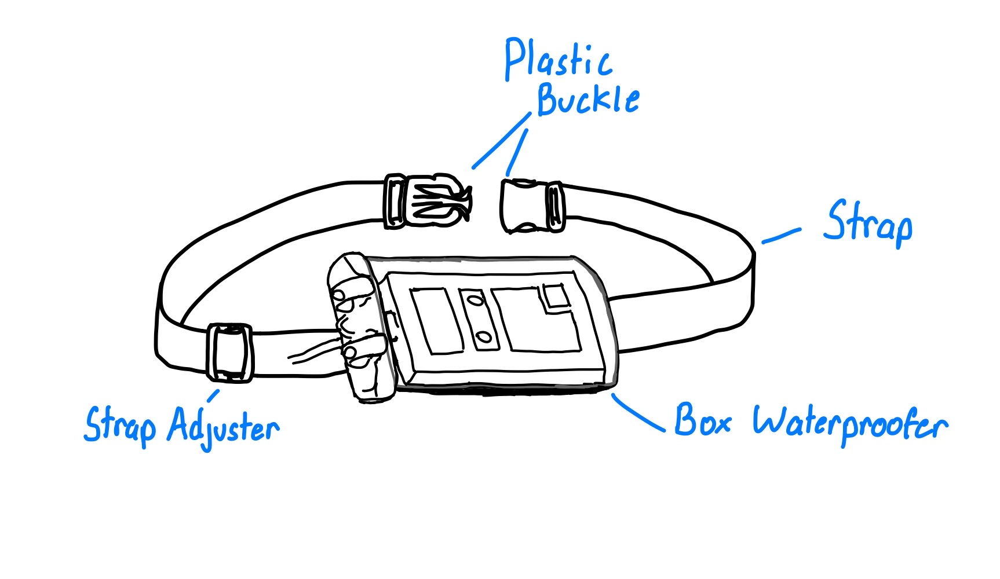

Diaphragmatic Pacemaker Waterproofing System
Patients with spinal cord injuries may lose diaphragm function, affecting breathing. Diaphragmatic pacers are implanted devices that enable independent breathing but are often not waterproof, complicating bathing. The Diaphragmatic Pacer Waterproofing system allows continuous use of the pacer in showers, reducing risks and improving patient independence.
Project Goals
- Design a low-cost accessory for all pacer platforms to increase accessibility to otherwise high-cost features
- Restore patient autonomy in showering situations
- Reduce the duration of the total showering procedure
Design Highlights
- Adjustable strap to fit different abdominal sizes
- Easy-to-attach buckle for intuitive use by healthcare professionals
- Low-cost, industry-proven electronics waterproofing case